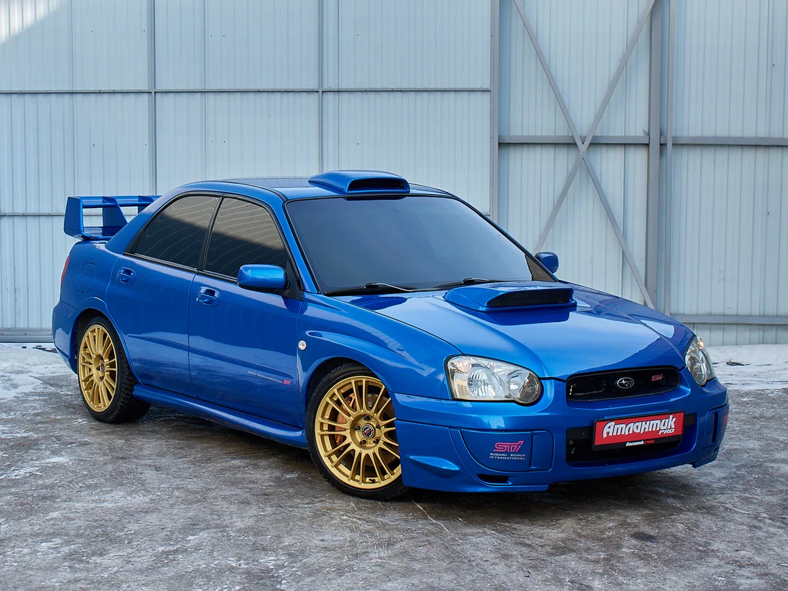

Мой фаворит

Subaru Impreza WRX STI
Мой фаворит — легендарный японский полноприводный спорткар. Оппозитный «боксер», турбина, характерный звук выхлопа и полный привод, который держит дорогу в любую погоду.
Я выбрал именно STI, потому что это не просто машина — это символ раллийной эпохи, икона JDM-культуры и автомобиль, который дарит эмоции с каждым поворотом ключа.